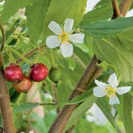

Info Tanaman Banyumanik

Talok
Kingdom: Plantae
Divisi: Tracheophyta
Class: Magnoliopsida
Ordo: Malvales
Famili: Muntingiaceae
Genus: Muntingia
Spesies: Muntingia calabura
🌱 Budidaya
- Lingkungan: Tumbuh baik di tanah biasa hingga tandus dan cocok di dataran rendah hingga 1.000 mdpl dengan sinar matahari penuh.
- Penanaman: Jarak tanam 2–3 meter antar pohon, dapat ditanam langsung di tanah atau pot besar.
- Perawatan: Sangat mudah, tahan kekeringan dan minim perawatan. Siram saat tanah benar-benar kering dan pangkas ranting agar tidak terlalu rimbun.
💡 Fun Fact
"Cemilan Favorit Burung Kecil" — Biji dari buah talok yang mungil dan lunak kerap dijadikan pakan alami bagi burung peliharaan karena mudah dicerna dan disukai oleh spesies seperti kenari dan pleci.
🍃 Manfaat
- Buahnya yang manis bisa langsung dimakan dan mengandung antioksidan yang bermanfaat bagi kesehatan.
- Daunnya berpotensi sebagai bahan herbal yang membantu menurunkan kadar gula darah dan bersifat antiinflamasi.
- Pohon talok tumbuh dengan cepat dan berfungsi baik sebagai peneduh di halaman rumah atau taman.